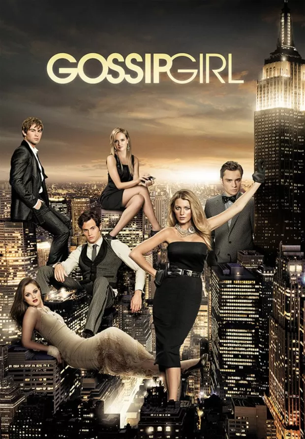

Sobre a Série
Gossip Girl é uma série de televisão americana baseada na série de livros homônima de Cecily von Ziegesar. A série, criada por Josh Schwartz e Stephanie Savage, estreou na The CW em 19 de setembro de 2007 e terminou em 17 de dezembro de 2012.
Enredo
Uma série, sobre jovens estudantes das escolas de elite no Upper East Side de Manhattan em Nova York, segue quando Serena van der Woodsen (Blake Lively) retorna à cidade após ter ficado seis meses fora em um internato e se mantido fora do alcance de amigos e conhecidos. Os acontecimentos e histórias de cada personagem são narrados em um site por uma blogueira anônima (voz por Kristen Bell), que atende pelo pseudônimo "Gossip Girl" (Garota Fofoqueira, em português). Gossip Girl narra os escândalos de Serena e seus amigos desde a oitava série de Serena, quando a garota ficou com seu vestido branco todo molhado dentro de um avião na viagem de excursão da escola. Desde então, Serena virou a vitima preferida de Gossip Girl. Magoada pelo fato de Serena não ter dado nenhuma noticia e ainda por ter passado por gravíssimos problemas familiares sozinha, Blair Waldorf (Leighton Meester) começa excluindo socialmente a melhor amiga e mantendo distância de Serena, como punição pela total perda de contato durante sua ausência.
Personagens Principais
- Serena van der Woodsen: Interpretada por Blake Lively.
- Blair Waldorf: Interpretada por Leighton Meester.
- Dan Humphrey: Interpretado por Penn Badgley.
- Nate Archibald: Interpretado por Chace Crawford.
- Chuck Bass: Interpretado por Ed Westwick.
Temporadas
A série possui 6 temporadas com um total de 121 episódios.
- Temporada 1: 2007-2008
- Temporada 2: 2008-2009
- Temporada 3: 2009-2010
- Temporada 4: 2010-2011
- Temporada 5: 2011-2012
- Temporada 6: 2012